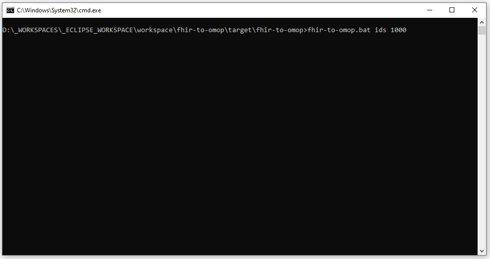
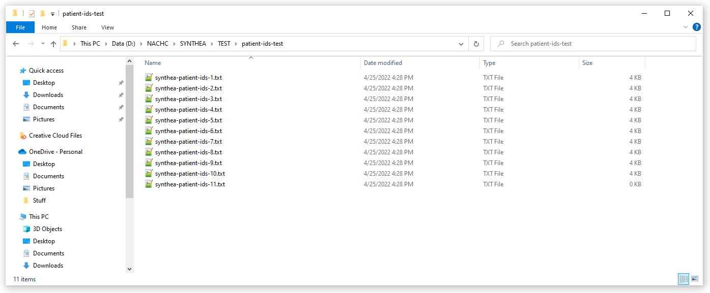

# --- # DOWNLOAD STUFF # --- httpClientAuthenticatorClass=org.nachc.tools.fhirtoomop.fhir.util.server.auth.impl.HeaderTokenAuthenticator fhirPatientServerUrl=https://syntheticmass.mitre.org/v1/fhir headerTokenAuthenticatorApiId=<your_value_goes_here> headerTokenAuthenticatorApiKey=<your_value_goes_here> headerTokenAuthenticatorSecret=<your_value_goes_here> headerTokenAuthenticatorUrl=https://syntheticmass.mitre.org/oauth2/accesstoken downloadPatientIdDir=D:\\NACHC\\SYNTHEA\\TEST\\patient-ids-test
The Download Patient IDs Tool can be run from the Standalone application as shown below by entering the command shown below. The second screen shot shows what the application should look like when it has finished. This tool will accept a second parameter. The second parameter is the maximum number of patients to download. In this example we are limiting the number of patient ids to 1000. This max is only approximate. Because of the way some FHIR servers implement paging the actual max number of patients down loaded can be slightly different.
fhir-to-omop.bat ids 1000
The results of running the application is the creation of a series of files in the directory specified in the app.properties file.
In this example we used "D:\NACHC\SYNTHEA\TEST\patient-ids-test" as the directory.
After running the application the directory looks like this:

Each of the files in this directory contains 100 patient IDs.
These IDs can then be used to query the FHIR Patient Server for information about that patient.
This includes the /Patient[id]/$everything resource.
The contents of synthea-patient-ids-1.txt is shown below.
This file can be downloaded here.
6f7acde5-db81-4361-82cf-886893a3280c 728b270d-d7de-4143-82fe-d3ccd92cebe4 5acc8bb4-2d14-4461-a560-228d96459cc3 78b28fcd-c455-4da1-81c5-ba94c1f3f5b6 933c5ad6-11aa-4228-a5ae-72f075aa4681 d819cfa2-c349-4920-94ab-dc244da43c50 0cd47600-e7d5-426a-9320-b1d817e8a73a 7e38c1b6-0b23-486c-b497-08902390a31d b24efd46-fae3-47e5-97a5-a1545da053fe f6d2bf6d-5c91-40b6-ba88-9bcbca6ebfbd db252ad1-7748-4b86-bac7-61184decb0ae 69639ae1-8cf3-4112-9097-6ad93a5997dc f9501d43-81e0-4c40-8306-9f9cb1769b3d 570cbad5-a727-4720-9a97-b46088196cd7 580625f2-cb5f-4d81-87d2-0f1e66862969 167d8dd6-7ecd-4ad5-8e7a-63a6d6f077da b83daa26-3eea-41a0-be57-74beb42f6504 05306f3b-c7c3-4f9a-a441-87feb2ec6a66 871c83f5-5674-450b-a3b6-be3bbcf8a095 995a1c0f-b6bc-4d16-b6b0-b8a6597c6e1d b6ab974a-0cd3-4a45-9c8f-0543b79a007d b2360a02-ec1b-4463-b5e8-0996f7b6a4ac 615c67c5-5ac0-4538-84ae-bd8d4e19dc5d 81471da3-aaab-458a-bae3-c71525fe7415 6c1c89d0-27fc-4289-ba21-ed79a200ebe6 789fce0b-d5a5-4d8b-9fa9-070ccfb7d474 326299d1-23d8-46bf-8266-e58efe60c0ea c0c6a188-d377-413e-8dc7-6ded539c96d9 155835fd-7f1d-414b-94d2-41d44adcf250 ef25ddf1-615e-43d5-b539-6af200ae7da4 fde02360-8b61-40c1-b5c9-e686627d8207 d41ef714-15e0-44d3-afe3-3be47689f873 89645076-a956-485d-9de0-bef62b10daa6 0d28e708-12c0-4282-ab1f-831599e61792 c3e58176-8e84-4721-a6b9-0d7eea88d109 03a27898-d209-48aa-a2ec-a03f6fdaf1fe 47fc4fcb-2862-406c-9931-929fc1892ca2 d02546e8-aa0a-4b24-97a4-b6147a599478 fd71330e-ebd7-4e86-a43c-39ea210caf5c c784b280-c6e9-4205-975e-b89057e23a2e 326c4936-086b-4967-9970-4db1d7a169c9 57091303-30fb-4bcc-a4e6-1f76dc7993a7 245c115e-eeba-4d79-88fb-9ff7029cc662 2cd701bf-b781-493c-ab3c-30a8603015df a29211ce-0014-43f5-a103-6368fa664749 a28cfad3-f1da-421e-91e2-0f16f1d7253d 5294faca-cba1-4606-a079-23539a3e26e2 78226741-3095-42a9-87e2-9a18604edb7d bbb2ec77-c5cf-408f-aab8-3f1496334617 770a1931-b6d8-485e-8da8-9256f3208c27 aaae7cd0-c632-4b28-8aa7-c5ae41e4753d fe8a77cd-facf-471d-97ad-6a7a7cf6561d 4fdb156f-e87a-4f69-bca2-d8d61e595ce9 ef59d34d-e132-4bca-9246-d2efc1df73da dcf240d2-ad7d-4bd2-8952-cebd9ebc6003 41d0b3e0-264a-41d7-9370-84a1521ec505 81fdf5bf-e03f-4662-a727-6804a7870021 9b84f3aa-1ac8-4a74-b07b-f5853a365494 ed011cc9-cf28-4234-bc62-e96ad02d06bf fc0b3924-0ca8-424f-81b0-08f7f37b6e9b 4dafccb6-7548-43f4-b394-39170367f1ef 772fe3d7-c13c-4f24-bf0f-fc714cbf98b1 9958eb49-ff3b-4797-b720-52a32d0fc7d0 9e87ed0a-d759-4407-a0dc-c629fc102c89 a490a01b-4d69-4498-8ef3-caa8ed5ea3ba 3ee3e7f0-bfeb-476b-abc2-eb6517d2d0b2 9bcf15aa-c5cc-4d5d-b16b-325eef407f9f d82dd97f-b76e-4d49-bae7-38f3d3bef190 46b6a07a-2e13-4460-85a5-cc9c63747c73 8e43e552-17d9-406d-9a5b-250c3c33ce83 818cf547-5821-46eb-b2f2-14e2a46fccbb 67cf4015-f9fc-4e22-bc90-b40e17442039 9ee5abef-b073-4926-8cf1-6b0c7caf31ac 67fc74cc-7e9b-4eb8-9ad6-47dfe73121e1 dbef14f5-f48e-458e-9a2a-5479db87db38 ffdaff70-25f4-419b-a55e-f718a8c3efc3 b93f0e35-b955-49f2-807d-187788137edf 142149fa-b73b-4466-9eb8-d88af9eb5448 80c54830-4add-48fd-b9f6-a76020b0570a 474a5860-bbac-4101-8890-10ad29351845 07605caa-9b62-4c90-a939-5fb630cab028 b6e5a598-87a8-43f7-9677-dc51ca76b72a e7190189-9c85-497d-a7b5-3972ca3c0ecb a91c0655-0f40-4253-864e-2f9a77d37667 673c9383-9b88-4a28-a4d0-4c6df1190690 4323f5df-289a-4aa5-8795-b048f8c8fdf8 46f99b9f-ab88-40d6-a3a2-24adec933bb3 6064dd35-f93a-4fba-902b-2f92191554c3 7e866b75-a36d-4531-b1e3-57aae634ae04 6a49d9e8-6c8b-4326-80dc-bb54856b07f2 6f526a1e-eae2-4583-bb15-856d7b2d9289 f7b6050c-2986-4175-8026-688ca4062543 088828a0-7ef6-43a5-aa4e-0c6292e59389 7da4a2c2-144f-46a6-bba0-78c384efae03 fda8df83-a8d9-4c5c-bc5b-e7b294889414 22b0e94a-c395-4c38-ab65-7b34084e15dc d59c197a-0115-47c0-ad90-01799d32e01e ea39dc3c-1e38-484f-b6db-c03d5e96347a 0e0d36f4-6653-4ae0-b83d-2530f90deff5 52e68ec6-3662-4d7a-b612-dff264d7f071